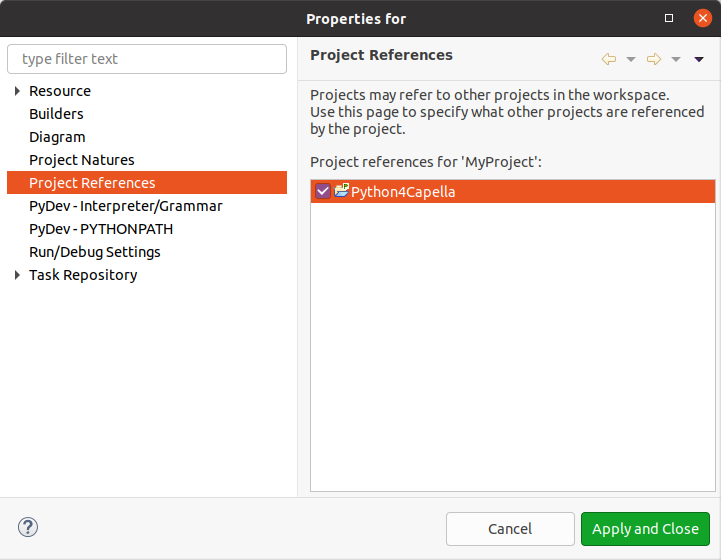
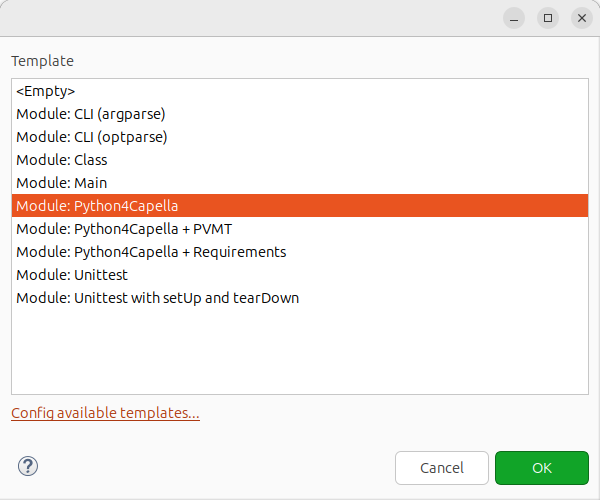

This section explains how you can write your Python for Capella script.
We advise that you store your own Python scripts in a separated project. This will prevent some losses when you update Python for Capella.
You can right click in the new / Project... menu, and select the PyDev project:
You can select a name for your project and click the finish button.
Now you need to add your project to the list of script locations:
Select the Window > Preferences menu
You need to add the Python4Capella project as a dependency of your project. To do so, you need to make sure you are in the
PyDev perspective. If it’s not the case, you can click on the perspective button on the top right corner of your Capella and select the PyDev perspective.
Then right click on your project and select the Properties menu. Then select the Project References menu:

You can select the Python4Capella project to add it as a dependency. This way you will be able to access all the Capella APIs defined in the Python4Capella project.
To create a Python script in the context of Python4Capella, you first need to create a Python file and then import scripts from Python4Capella.
Create the Python file by right clicking the container where you want to create the file and select new / other... and select PyDev Module:
You can click next, select a name for your script and click finish, you will be asked to select a template, simply click the ok button:

You will need to import the Capella APIs (This statement can produce an error, but you can ignore or remove it):
include('workspace://Python4Capella/simplified_api/capella.py')
if False:
from simplified_api.capella import *
The first line will produce an error because it’s an EASE instruction that is not understood by PyDev but this will not prevent you from using your script. You can also configure PyDev to remove this error.
Note: you can find existing examples in Python4Capella/sample_scripts.
You can also configure your Capella to show the line numbers in the PyDev editor. Use the Window Preferences menu, and type line number in the filter:

Then you can check the Show line numbers check box.
We packaged openpyxl with the Python37.zip file. You can have a look at provided sample scripts and openpyxl project page for usage.
It’s possible to contribute a popup menu to Capella that will run your script by adding the following header at the beginning of your script:
# name : Export Diagrams
# script-type : Python
# description : Exports diagrams of the selected Element
# popup : enableFor(org.polarsys.capella.core.data.capellacore.CapellaElement)
The name define the name of the menu. The script-type is the scripting language used, Python in the case of Python4Capella. The description is the description of the menu. popup tells that we want a popup menu on objects with the type CapellaElement. The type is the qualified name of the Java class.
You can find more ways to contribute your scripts in the EASE documentation.
You can then get the selected element with the following code:
selected = CapellaElement(CapellaPlatform.getFirstSelectedElement())
You can adapt the type according to the type defined in the header. You can also use the EObject.get_class() to get the specific type of the selected object:
specific_cls = EObect.get_class(CapellaPlatform.getFirstSelectedElement())
selected = Node
if specific_cls is not None:
selected = specific_cls(CapellaPlatform.getFirstSelectedElement())
Note: all classes of the Capella metamodel are not present in the simplified Python one. You can check the specification model or the MS Word document to have a description of the simplified metamodel.
Note: You script need to be in the script location of EASE.
- open preferences: menu Window / Preferences
- select Scripting / String location on the right tree and add the path of your script if not already done.